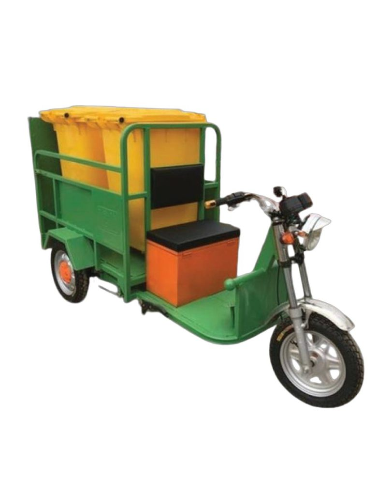
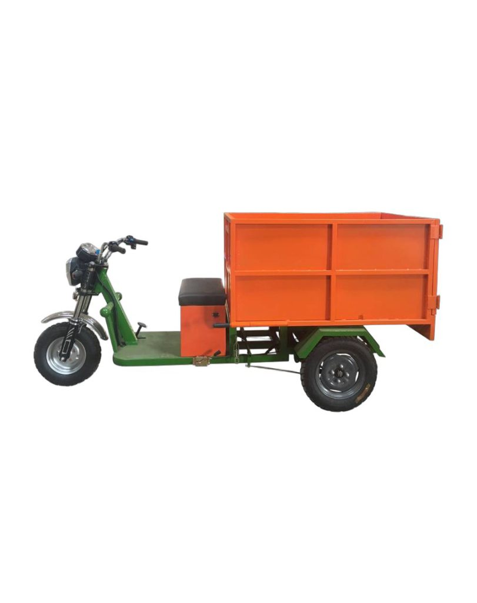
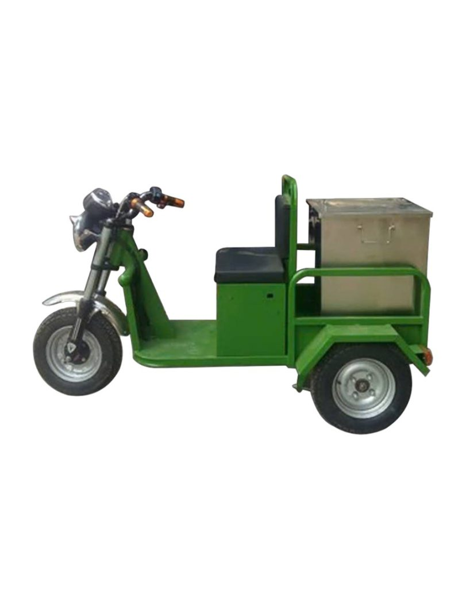

Xe chở rác 3 bánh chạy điện 480L
Tên sản phẩm: Xe chở rác 3 bánh chạy điện 480L Cơ cấu: Xe…
Xem chi tiếtTên sản phẩm: Xe chở rác 3 bánh chạy điện 480L Cơ cấu: Xe…
Xem chi tiết
Tên sản phẩm: Xe chở rác 3 bánh chạy điện thùng tôn 500L Cơ…
Xem chi tiết
ICD là đơn vị chuyên sản xuất và phân phối xe chở rác 3…
Xem chi tiết
Cơ cấu: Xe chở 02 thùng 240L có bửng đẩy thùng lên xuống. KT…
Xem chi tiết
Cơ cấu: Xe có thùng chứa dung tích 1m3 KT thùng xe (DxRxC): 1360x1000x700mm…
Xem chi tiết
Xe chở rác loại nhỏ Tata tải trọng 870kg sử dụng động cơ TATA…
Xem chi tiết
Xe chở rác thùng 3.5 khối Hyundai H150 thiết kế nhỏ gọn, vận hành…
Xem chi tiết
Xe chuyên dùng thu gom rác 5 khối nhãn hiệu KIA K250B, thiết kế…
Xem chi tiết
THIẾT BỊ MÔI TRƯỜNG CHUYÊN DÙNG - Chuyên cung cấp Xe thu gom rác…
Xem chi tiếtTrong công tác vệ sinh môi trường đô thị và khu công nghiệp, việc thu gom và vận chuyển rác thải đóng vai trò vô cùng quan trọng. Để đảm bảo quá trình xử lý rác diễn ra nhanh chóng, sạch sẽ và an toàn, xe chở rác là thiết bị không thể thiếu đối với các đơn vị vệ sinh môi trường, khu dân cư, nhà máy và các khu thương mại.
Với thiết kế chuyên dụng, bền bỉ và tiện lợi, xe chở rác giúp quá trình thu gom rác thải trở nên đơn giản, tiết kiệm thời gian và nâng cao hiệu quả công việc.
Xe chở rác là gì?
Xe chở rác là thiết bị được sử dụng để thu gom, lưu trữ tạm thời và vận chuyển rác thải từ các khu vực phát sinh đến nơi tập kết hoặc xử lý. Tùy theo mục đích sử dụng, xe chở rác có thể được thiết kế với nhiều kiểu dáng, dung tích và chất liệu khác nhau.
Các loại xe này thường được sử dụng tại:
Khu dân cư, khu đô thị
Trường học, bệnh viện
Nhà máy, khu công nghiệp
Trung tâm thương mại
Công viên, khu du lịch
Nhờ khả năng chứa rác lớn và dễ dàng di chuyển, xe chở rác giúp giảm đáng kể công sức của nhân viên vệ sinh và đảm bảo môi trường luôn sạch sẽ.
Ưu điểm của xe chở rác
Dung tích lớn, thu gom rác hiệu quả
Xe chở rác được thiết kế với thùng chứa rộng, giúp thu gom lượng rác lớn trong mỗi lần vận chuyển. Điều này giúp giảm số lần di chuyển và nâng cao hiệu quả công việc.
Chất liệu bền bỉ
Nhiều dòng xe chở rác được sản xuất từ nhựa HDPE, thép sơn tĩnh điện hoặc inox chống gỉ, có khả năng chịu lực tốt và hoạt động bền bỉ trong điều kiện môi trường khắc nghiệt.
Thiết kế tiện lợi, dễ di chuyển
Hầu hết các xe chở rác đều được trang bị bánh xe chắc chắn giúp việc di chuyển trở nên nhẹ nhàng và linh hoạt, kể cả khi thùng rác chứa đầy.
Giữ vệ sinh và hạn chế mùi
Một số dòng xe chở rác được trang bị nắp đậy kín, giúp hạn chế mùi hôi, tránh nước rỉ rác và đảm bảo vệ sinh trong quá trình vận chuyển.
Cấu tạo cơ bản của một chiếc xe chở rác
Để đảm bảo hoạt động bền bỉ và hiệu quả trong quá trình sử dụng, một chiếc xe chở rác thường được cấu tạo từ các bộ phận cơ bản sau:
Khung xe
Khung xe là bộ phận chịu lực chính của toàn bộ phương tiện. Khung thường được chế tạo từ thép dày hoặc thép sơn tĩnh điện nhằm đảm bảo độ chắc chắn, khả năng chịu tải lớn và độ bền cao trong môi trường làm việc khắc nghiệt.
Thùng chứa rác
Thùng chứa rác là bộ phận dùng để lưu trữ rác trong quá trình thu gom và vận chuyển. Thùng thường được làm từ tôn mạ kẽm, inox hoặc thép sơn tĩnh điện, có khả năng chống ăn mòn, hạn chế rỉ sét và dễ dàng vệ sinh sau khi sử dụng.
Một số dòng xe còn được thiết kế nắp đậy hoặc hệ thống ben lật giúp việc đổ rác nhanh chóng và đảm bảo vệ sinh.
Hệ thống bánh xe
Xe chở rác thường được trang bị bánh xe cao su đặc hoặc lốp hơi, giúp xe di chuyển linh hoạt trên nhiều loại địa hình khác nhau như đường bê tông, đường nhựa hay đường đất. Bánh xe chắc chắn giúp việc vận chuyển rác trở nên nhẹ nhàng và ổn định hơn.
Hệ thống tay lái hoặc tay đẩy
Tùy theo từng loại xe, xe chở rác có thể được trang bị tay đẩy (đối với xe gom rác thủ công) hoặc tay lái (đối với xe chở rác chạy điện, chạy xăng). Bộ phận này giúp người vận hành điều khiển xe dễ dàng trong quá trình thu gom rác.
Hệ thống truyền động
Ở các dòng xe chở rác chạy điện hoặc chạy xăng, hệ thống truyền động có nhiệm vụ truyền lực từ động cơ đến bánh xe, giúp xe di chuyển. Bộ phận này đảm bảo xe hoạt động ổn định và có thể chở được khối lượng rác lớn.
Hệ thống phanh
Hệ thống phanh giúp xe giảm tốc và dừng lại an toàn khi di chuyển, đặc biệt quan trọng khi xe chở đầy rác. Tùy theo thiết kế, xe có thể sử dụng phanh cơ, phanh tang trống hoặc phanh đĩa.
Các loại xe chở rác phổ biến hiện nay
Trên thị trường hiện nay có nhiều loại xe chở rác phù hợp với từng nhu cầu sử dụng khác nhau.
Xe chở rác đẩy tay
Đây là loại xe phổ biến trong các khu dân cư, trường học hoặc khu công nghiệp. Xe có thiết kế gọn gàng, dễ sử dụng và thuận tiện cho việc thu gom rác hàng ngày.
Xe chở rác 660L - 1000L
Dòng xe có dung tích lớn, thường được sử dụng tại khu đô thị, khu công nghiệp hoặc các đơn vị vệ sinh môi trường chuyên nghiệp.
Xe chở rác bằng tôn hoặc inox
Loại xe này có độ bền cao, khả năng chịu va đập tốt và phù hợp với môi trường làm việc khắc nghiệt.
Xe chở rác chuyên dụng
Được thiết kế phục vụ các hệ thống thu gom rác quy mô lớn, giúp tối ưu hóa quá trình vận chuyển và xử lý rác thải.
Kinh nghiệm chọn mua xe chở rác phù hợp
Để lựa chọn được sản phẩm phù hợp với nhu cầu sử dụng, bạn nên cân nhắc một số yếu tố sau:
Dung tích thùng rác: Lựa chọn dung tích phù hợp với lượng rác cần thu gom.
Chất liệu: Ưu tiên vật liệu bền, chống ăn mòn và dễ vệ sinh.
Thiết kế bánh xe: Bánh xe chắc chắn giúp di chuyển dễ dàng hơn.
Môi trường sử dụng: Gia đình, khu dân cư, nhà máy hay khu công nghiệp.
Độ bền và chế độ bảo hành: Nên chọn sản phẩm từ đơn vị cung cấp uy tín.
Địa chỉ cung cấp xe chở rác chất lượng
Hiện nay, các dòng xe chở rác được sản xuất với nhiều mẫu mã, dung tích và chất liệu khác nhau để đáp ứng đa dạng nhu cầu sử dụng. Lựa chọn sản phẩm chất lượng không chỉ giúp nâng cao hiệu quả thu gom rác mà còn góp phần giữ gìn môi trường sống sạch đẹp.
Chúng tôi cung cấp nhiều mẫu xe chở rác bền bỉ, thiết kế tiện lợi, giá thành hợp lý, phù hợp cho khu dân cư, doanh nghiệp và các đơn vị vệ sinh môi trường. Nếu bạn đang tìm kiếm giải pháp thu gom rác thải hiệu quả, các sản phẩm xe chở rác của chúng tôi chắc chắn sẽ là lựa chọn đáng tin cậy.
Các loại xe chở rác mà ICD đang sản xuất và phân phối
Nhằm đáp ứng nhu cầu thu gom và vận chuyển rác thải tại nhiều khu vực khác nhau như đô thị, khu dân cư, khu công nghiệp và nông thôn, ICD đã nghiên cứu và phát triển nhiều dòng xe chở rác chuyên dụng với thiết kế đa dạng về dung tích, công suất và phương thức vận hành. Các sản phẩm được tối ưu để nâng cao hiệu quả thu gom rác, giảm sức lao động cho công nhân vệ sinh và thân thiện với môi trường.
Hiện nay, ICD đang sản xuất và phân phối một số dòng xe chở rác phổ biến sau:
Xe điện chở rác 3 bánh
Đây là dòng xe thu gom rác phổ biến trong các khu dân cư, ngõ xóm và khu đô thị. Xe sử dụng động cơ điện nên vận hành êm ái, không gây tiếng ồn và không phát thải khí độc ra môi trường.
Xe điện chở rác 3 bánh của ICD thường có dung tích từ 400L - 500L, động cơ khoảng 1000W và có khả năng chở tải trọng lớn, phù hợp cho công việc thu gom rác hàng ngày.
Xe chở rác chạy điện có ben lật
Đây là dòng xe được thiết kế với thùng chứa lớn và hệ thống ben thủy lực, giúp nâng và đổ rác tự động mà không cần tốn nhiều sức lao động.
Xe có dung tích thùng lên tới 1,5 m³, tải trọng khoảng 1000 kg, phù hợp với các hợp tác xã môi trường, công ty dịch vụ công ích hoặc các đơn vị thu gom rác quy mô lớn.
Xe chở rác 3 bánh chạy xăng
Dòng xe này được trang bị động cơ xăng, thích hợp cho các khu vực có địa hình dốc, đường gồ ghề hoặc quãng đường thu gom dài.
Ưu điểm của xe là khả năng hoạt động liên tục trong thời gian dài mà không cần chờ sạc điện, giúp tăng hiệu quả vận chuyển rác tại các khu vực nông thôn hoặc vùng đồi núi.
Xe điện kéo xe gom rác
Đây là loại xe điện nhỏ gọn chuyên dùng để kéo các xe gom rác trong tầng hầm chung cư, khu đô thị hoặc nhà xưởng.